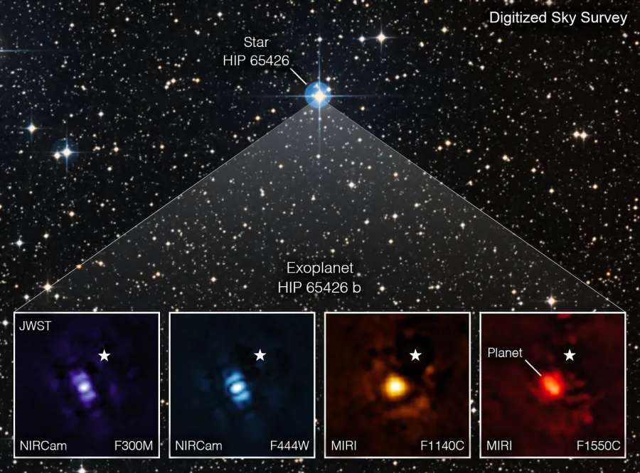

1. September 2022
HIP 65426 b: erstes direktes Exoplanetenbild des Webb-Teleskops
Am 1. September 2022 wurde das erste direkte Bild eines Exoplaneten mit dem James-Webb-Weltraumteleskop veröffentlicht. Es zeigt den Gasriesen HIP 65426 b in vier Infrarotfiltern der Instrumente NIRCam und MIRI, deren Koronografen das Sternlicht ausblenden. Im nahen Infrarot ist der Planet mehr als 10.000-mal lichtschwächer als sein Stern.
HIP 65426 b war 2017 mit dem Instrument SPHERE am Very Large Telescope der ESO entdeckt worden. Er hat etwa sechs bis acht Jupitermassen, ist nur 15 bis 20 Millionen Jahre alt und rund 100-mal weiter von seinem Stern entfernt als die Erde von der Sonne. Das System liegt etwa 385 Lichtjahre entfernt.
Quellen: ESA/Webb: "Webb Takes Its First Exoplanet Image", 01.09.2022; ESO: "ESO’s SPHERE Unveils its First Exoplanet", 06.07.2017